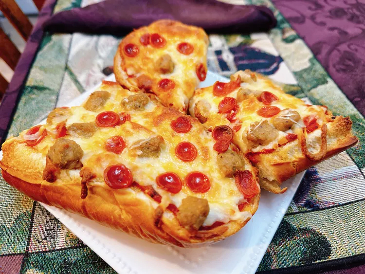

Baguette Pizza

Description
Split a regular baguette lengthwise to create a tasty pizza with toppings that can be as simple as sauce, cheese, pepperoni or sausage.
Ingredients
- 1 French baguette
- 1/2 cup pizza sauce, or as needed
- 2/3 cup shredded mozzarella cheese
- 2 ounces cooked and crumbled sausage
- 2 ounces mini pepperoni slices
Directions
- Preheat the oven to 375 degrees F (190 degrees C).
- Split baguette in half lengthwise. Warm pizza sauce in a microwave-safe bowl until hot, about 45 seconds.
- Spread pizza sauce on baguette, sprinkle on cheese, and scatter sausage and pepperoni on top as desired. Place pizza onto a baking tray.
- Bake in the preheated oven until cheese is golden, about 18 minutes. Optional step: turn on the oven’s broiler, set a rack 6 inches below the heating element, and broil the pizza for a deeper color, 1 to 2 minutes.
- Cut pizza crosswise into slices. Serve and enjoy.
Cook's Note:
If you prefer, cut 16 crosswise slices of bread. Each slice can be a “round mini pizza” which can then be customized for each person’s preference.